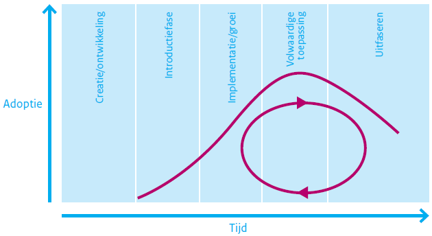

BOMOS (Beheer- en OntwikkelModel voor Open Standaarden) is een hulpmiddel
van en voor de standaardisatiewereld. Dit deel 1 bevat als fundament een
beschrijving van het Beheer- en Ontwikkelmodel; een gelaagde set van
activiteiten die relevant zijn bij het ontwikkelen en beheren van standaarden.
Daarnaast zijn rollen gedefinieerd die relevant zijn bij het beheer-
en ontwikkelproces van standaarden. Ook beschrijft het de context hoe BOMOS
in de standaardisatiepraktijk te gebruiken is.
Status van dit document
Dit is een werkversie die op elk moment kan worden gewijzigd, verwijderd of vervangen door andere documenten. Het is geen door het Technisch Overleg goedgekeurde consultatieversie.
We starten met een woord van dank, en zullen vervolgens de BOMOS
"Geboden" presenteren, waarin veel uit BOMOS in samen komt. De
structuur van BOMOS wordt toegelicht, om daarna uitgebreid het Beheer-
en Ontwikkelmodel te introduceren, wat afgesloten wordt met een
overzicht van onderwerpen die in BOMOS Deel 2: De
Verdieping
terugkomen.
1.1 Woord van dank
Al in 2006 werd er aan voorlopers van BOMOS gewerkt, maar het duurde
tot 2009 voordat de eerste publicatie van BOMOS het levenslicht zag,
met de kenmerkende activiteitenplaat. Dus hoe je ook telt, BOMOS
bestaat inmiddels meer dan 10 jaar.
Er zijn inmiddels al vele werkgroepen betrokkenen geweest die in de
loop der jaren aan BOMOS hebben bijgedragen. Een mooie ontwikkeling,
die eigenlijk ook de essentie van BOMOS benadrukken: Van en Voor de
standaardisatiepraktijk. BOMOS als inspiratie voor in de
standaardisatie praktijk, en dat gebruik leidt ongetwijfeld tot nieuwe
ervaringen en behoeftes die ook weer verwerkt kunnen worden in
BOMOS. Het heeft ook geleidt tot verschillende versies en variaties
van BOMOS, wat het gebruik niet makkelijker maakt.
Figuur 1 Strip over standaarden
In de beroemde strip denkt men het teveel standaarden op te lossen
door het introduceren van een nieuwe standaard die alle anderen
standaarden zou moeten vervangen. Echter het eindresultaat is alleen
een extra standaard toegevoegd. Met BOMOS hebben we dezelfde intentie,
maar hopen we toch echt op een ander resultaat: 1 BOMOS als startpunt
voor iedereen.
Eind 2018 organiseerde Logius een sessie rond het gebruik van BOMOS;
een inspirerende sessie met zo’n 40 deelnemers, die zo’n 30
verschillende organisaties representeerde die allen BOMOS (in meer of
mindere mate) gebruikte. Als wens kwam naar voren om deze nieuwe
versie te maken….maar ja, wie gaat dat dan doen? Wij staken de hand
op, en zijn aan de slag gegaan, met als doel niet om veel aan BOMOS te
veranderen, maar om deze ene integraal nieuwe versie te maken, die al
het andere vervangt, en daarnaast een toets op actualiteit heeft
gehad; immers de standaardisatie wereld heeft niet stilgestaan.
De tijd zal het leren of wij wel succesvol het eerdere werk hebben
vervangen met deze versie, of dat wij ook gewoon in de valkuil zijn
getrapt.
Erwin Folmer & Erwin Kaats & Edwin Wisse
Maart 2022
1.2 De 13 BOMOS "geboden"
“Een standaard die niet beheerd wordt is geen standaard!”
“Het is nooit te vroeg om de mogelijkheden voor het beheer van
de standaard te onderzoeken.”
“Een standaard ontwikkelen en beheren is geen tijdelijk project,
waardoor projectfinanciering geen geschikte financieringsbron is.”
“Een standaard ontwikkelen en beheren is een situationeel proces,
en kan daardoor voor elke standaard anders ingevuld zijn.”
“Een standaard is nooit af!”
“De openheid van de standaard wordt volledig bepaald door de
inrichting van ontwikkel en beheerproces.”
“Een duurzame standaard wil zeggen open en beheerd.”
“Het lelijke van standaarden is dat er al zoveel zijn; hergebruik
is cruciaal (geinspireerd door Professor Tanenbaum:"The nice thing
about standards is that you have so many to choose from".”
“Het beheren van standaarden kent veel overeenkomsten met andere
artefacten (stelselafspraken, data, api's, ...) waardoor BOMOS
ook bruikbaar is in andere contexten.”
“Een standaard is niet goed of slecht, open of gesloten, etc.;
er zijn vele tinten grijs, en altijd verbeterpunten.”
“Zonder standaarden waren er geen pyramides (standaarden zijn al
zo oud als de mensheid)”
“Standaarden, toegepast in architectuur, vormen de basis van
interoperabiliteit.”
“De essentie van een standaardisatie-proces is samenwerken; daarmee
is standaardisatie een cultuurverschijnsel.”
1.3 Aanleiding
Het beheer en ontwikkelen van standaarden is geen sinecure. Toch
gebeurt het vaak dat standaarden worden ontwikkeld zonder stil te
staan bij verdere ontwikkeling en beheer van de standaard. Dit komt
doordat standaardisatie vaak als tijdelijk project tot stand komt. Er
wordt projectfinanciering ingezet voor de ontwikkeling van een
standaard of een bijbehorende voorziening, maar een structurele inzet
ontbreekt. Dat gaat niet goed samen met een continue ontwikkeling en
beheer van standaarden.
1.4 Doel
Het doel van deze publicatie is organisaties te helpen bij het
opzetten van het beheer van standaarden en de verbetering
daarvan. Vragen waar deze publicatie een antwoord op geeft zijn:
Hoe kunnen we de standaard organisatorisch goed (door)ontwikkelen en beheren?
Hoe kunnen we ontwikkeling en beheer zo inrichten, dat er sprake is van een open standaard?
Hoe kunnen we de adoptie van onze standaard bij gebruikers verbeteren?
Deze concrete vragen waren oorspronkelijk de aanleiding tot het
opstellen van het Beheer- en OntwikkelModel voor Open Standaarden
(BOMOS), met handreikingen (best practices) voor een open invulling
voor het beheer. Sindsdien wordt BOMOS in de praktijk gebruikt, en is
er bij de gebruikers behoefte ontstaan om meer kennis en ervaringen te
delen rond het beheer van standaarden. Andere vraagstukken, zoals het
verbeteren van interoperaliteit met standaarden, de transparantie en
beheersbaarheid van een standaard zijn toegevoegd. En ook wordt BOMOS
gebruikt als gemeenschappelijke taal in de standaardisatiewereld.
1.5 Doelgroep
Met BOMOS worden standaardisatiecommunities en hun opdrachtgevers
ondersteund en geïnspireerd bij het structureel vormgeven van het
beheer en verdere ontwikkelingen van standaarden. Op basis van
praktische inzichten wordt deze doelgroep bedient met eenvoudige en
overzichtelijke modellen en adviezen.
1.6 Aanpak & Historie
In 2006 heeft de Werkgroep CMO (Community Model Open Standaarden), een
werkgroep van Bureau Open Standaarden (later omgedoopt tot Forum
Standaardisatie) van GBO.Overheid (later omgedoopt tot Logius), al aan
dit onderwerp gewerkt. De uitkomst, een notitie, is door Forum
Standaardisatie beschikbaar gesteld en vormde het startpunt voor de
ontwikkeling van BOMOS versie 1.
Als aanpak voor de ontwikkeling van BOMOS is gekozen voor een
gestructureerde discussie met een kleine groep van experts uit de
semantische standaardisatieorganisaties waarin kennis gedeeld werd
over de relevante onderwerpen. Dit heeft geleid tot versie 1 van BOMOS
in 2009.
Na de eerste uitgave heeft in 2010 opnieuw een serie bijeenkomsten
plaatsgevonden. Daar waren ook gebruikers van de eerste versie
vertegenwoordigd. Aan de hand van de ervaringen en nieuwe inzichten is
BOMOS verder uitgebouwd en uitgebreid: BOMOS versie 2.
Door middel van deze aanpak is kennis van organisaties die zich
bezighouden met ontwikkeling en beheer van standaarden verankerd;
zoals Logius, Geonovum, Kennisnet, CROW, Informatiehuis Water,
Stichting Elektronische Transacties Uitzendbranche (SETU), het
Nederlands Normalisatie-instituut (NEN), VNG Realisatie,
onderzoeksorganisatie TNO, Universiteit Twente en vele anderen.
In 2012 is onder aanvoering van Forum Standaardisatie gewerkt aan een
uitbreiding met als titel BOMOS2i. Waarbij de “i” staat voor
“implementatie”; Een handreiking hoe BOMOS in de standaardisatie
praktijk gebruikt kan worden. Een andere variant op BOMOS is
uitgebracht door TNO genaamd BOMOD. Ook hier gaat het over beheer en
ontwikkelprocessen, maar nu is het onderwerp het publiceren van
datasets in plaats van standaarden. Ook is in die periode BOMOS
(her)uitgebracht in verschillende huisstijlen. Al met al is het er
niet per definitie overzichtelijker op geworden voor een gebruiker.
Rond 2017 heeft Logius BOMOS verder opgepakt. Er is een uitbreiding op
BOMOS2i gepubliceerd door de toevoeging van een normenkader. Hierop is
de BOMOS-meting gebouwd. Dit instrument stelt een beheerder in staat
om het beheer van de standaard daadwerkelijk te toetsen.
In 2022 is deze BOMOS (versie 3.0.0) gepubliceerd waarmee de BOMOS
gebruiker een nieuw integraal startpunt heeft om met BOMOS aan de slag
te gaan.
De kern van BOMOS is het "Fundament". Dat bestaat uit een basis
beschrijving van het Beheer- en Ontwikkelmodel, en een verdere
verdieping op basis van literatuur of praktijkervaringen. Het Beheer-
en Ontwikkelmodel is in de basis een activiteitendiagram, daarnaast
zijn rollen gedefinieerd die relevant zijn bij het beheer- en
ontwikkelproces van standaarden.
Daarnaast biedt BOMOS in deel 2 meer verdieping door het delen van met name best practices uit de standaardisatiewereld.
Deel 1 en Deel 2 samen vormen de basis van BOMOS.
Naast deze basis zijn er uitbreidingen voor BOMOS gemaakt door de
community, die het toepassen van BOMOS in concrete situaties, soms met
een wat andere context, kunnen helpen. We noemen dit de BOMOS
Aanvullende Modules, ook wel een Body of Knowledge genoemd, welke
dynamisch zullen zijn in de tijd.
Als we het hebben over BOMOS, dan bedoelen we daarmee de basis zoals
in Deel 1 en Deel
2
beschreven. De aanvullende modules zijn wel duidelijk met BOMOS
verbonden, maar hebben een eigen governance wat kan resulteren in een
eigen naam, eigen doelgroep, eigen beheer, etc. In het beheerproces
van BOMOS wordt ook beschreven welke eisen er gesteld worden voordat
iets opgenomen wordt als BOMOS aanvullende module.
1.8 Leeswijzer
Bent u vanuit een beleidsmakende of besturende rol alleen op
hoofdniveau geïnteresseerd, dan biedt het fundament (deel 1) voldoende
achtergrond en context. Bent u zelf actief in
standaardisatiecommunities dan kunt u naadloos doorgaan met het lezen
van deel 2: De verdieping met best practices, waarin meer achtergrond
en praktische tips rond standaardisatie zijn opgenomen.
Wilt u BOMOS gaan toepassen dan is het ook raadzaam om de aanvullende
modules te gaan bekijken. Hier kunt u voorbeelden en tools vinden die
kunnen helpen bij implementaties van open standaarden. Ook vindt u
hier varianten op BOMOS. Deze implementatieprofielen maken BOMOS
toepasbaar op meer dan (semantische) standaarden alleen.
2. Context & Definities
2.1 Context: standaarden voor interoperabiliteit
De belangrijkste redenen voor organisaties om interoperabiliteit na te
streven zijn effectiviteit en efficiëntie. Standaardisatie zorgt voor
een betere samenwerking in de gehele keten van bijvoorbeeld partners,
toeleveranciers en klanten. Een gebrek aan interoperabiliteit is niet
alleen kostbaar, maar kan ook leiden tot langere doorlooptijden, zoals
verschillende onderzoeken laten zien. Zo worden de kosten van gebrek
aan interoperabiliteit in de automobielindustrie in de Verenigde
Staten geschat op 1 miljard dollar, en een twee maanden langere
ontwerptijd dan strikt noodzakelijk (Zie: Brunnermeier, S.B. &
S.A. Martin (2002). Interoperability costs in the US automotive supply
chain. Supply Chain Management 7(2), pp. 71-82.). Ook de overheid
heeft belang bij het nastreven van interoperabiliteit, maar heeft nog
een extra reden ondermeer vanuit maatschappelijk oogpunt. Denk aan de
consequenties bij een ramp wanneer de verschillende
hulpdienstorganisaties niet interoperabel met elkaar zouden
zijn. Daarnaast doen zich bij thema’s als het elektronisch
patiëntendossier en de problematiek rond risicojongeren ook
interoperabiliteitsvraagstukken voor.
Standaarden zijn een belangrijk middel voor het bereiken van
interoperabiliteit, en daarnaast ook belangrijk voor
leveranciersonafhankelijkheid. Standaarden zijn er in verschillende
soorten en maten. Er zijn zeer veel indelingen in type standaarden,
maar binnen de overheid wordt het European Interoperability Framework
als leidraad gehanteerd. Hierin wordt onderscheid gemaakt tussen
technische en semantische interoperabiliteit, waarmee ook een
onderscheid te maken is tussen technische en semantische standaarden.
De technische (infrastructureel) georiënteerde standaarden kunnen
veelal één-op-één overgenomen worden van internationale consortia
zoals W3C, UN/CEFACT, ETSI, ISO, CEN en IETF.
Standaarden van semantische aard vereisen vaak een regionaal profiel
zodat rekening kan worden gehouden met specifieke implemenatieeisen.
Zo zijn er Nederlandse gebruikersgroepen (communities) actief voor het
ontwikkelen van een nationale profielen op internationale standarden.
In de context van Nederlandse wetgeving en/of Nederlandse specifieke
bedrijfs(overheids)-processen is het namelijk noodzakelijk om
internationale standaarden toe te spitsen op de Nederlandse situatie.
(Bedrijfs)Transactie standaarden, vocabulaires (waardelijstjes) of
dossiers (bv. patiëntendossier) zijn ook voorbeelden van semantische
standaarden. Andere kenmerken van semantische standaarden zijn:
Het zijn vaak een specifieke invulling van een internationale standaard.
Ze zijn vaak voor een specifiek inhoudelijk probleem:
Bijv. ‘verticaal’: informatie-uitwisseling voor een bepaalde sector: Geo-domein, Onderwijs, Zorg, etc.
Bijv. ‘horizontaal’ informatie-uitwisseling voor een bepaalde functie: Inkoop, Facturatie, etc.
Ze worden vaak ontwikkeld en beheerd in het domein (de sector), en niet door formele standaardisatieorganisaties.
De kern van de standaard is de semantiek (de betekenis), niet de techniek.
Een semantische standaard staat nooit op zichzelf en heeft vaak
meerdere relaties met andere internationale standaarden, waaronder ook
technische standaarden. Vaak zien we ook een gelaagdheid binnen de
semantische standaard: De internationale semantische standaard die de
basissemantiek standaardiseert voor een bepaald probleemdomein en
ruimte biedt om in een specifieke context (zoals een land) nog extra
afspraken te standaardiseren. Deze extra afspraken bovenop de
internationale standaarden worden soms een toepassingsprofiel genoemd,
maar regelmatig ook gewoon aangeduid met de term semantische
standaard. Binnen het toepassingsprofiel of semantische standaard
worden vaak vocabulaires (codelijsten e.d.) buiten de standaard
vastgesteld omdat deze een eigen dynamiek kennen en daarmee andere
beheerprocedures van toepassing kunnen zijn. Hiermee hebben we drie
niveaus van semantische standaarden; de internationale, de specifieke
context (bijv. nationaal), en de vocabulaires. Een belangrijke taak is
afstemming blijven houden met de ontwikkel- en beheerorganisaties van
deze internationale standaarden. De semantische standaarden, waar dit
document op van toepassing is, kan van toepassing zijn in de
overheidscontext (G2G, G2B en/of G2C-context), maar in de praktijk zal
dit document evengoed van toepassing zijn buiten de overheidscontext.
Het ontwikkelen en het beheer van standaarden is anders dan het
ontwikkelen en beheren van andere producten zoals voorzieningen en
software. Een voorziening is een samenstel van informatie, systeem,
organisatie en koppelvlak ten behoeve van dienstverlening. Zowel
intern binnen de voorziening, als op het koppelvlak van de voorziening
met de buitenwereld kunnen verschillende type standaarden gebruikt
worden waaronder ook semantische standaarden. Deze gebruiksrelatie
tussen een standaard en voorziening geldt evengoed tussen een
standaard en software.
Voorbeeld: NL-LOM en Edurep. De standaard NL-LOM beschrijft op welke
manier metadata moet worden vastgelegd bij educatief materiaal. Een
voorziening dat gebruik maakt van NL-LOM is Edurep, een zoekmachine
die op basis van metadata educatief materiaal vindbaar maakt. (NL-LOM:
https://www.forumstandaardisatie.nl/standaard/nl-lom;
Edurep:
https://www.kennisnet.nl/edurep/)
Standaarden hebben daarmee andere gebruikers, en andere uitdagingen
zoals afstemming met communities en internationale standaarden. Dat
betekent niet dat de semantische standaardisatiediscipline niet kan
leren van andere disciplines, zoals de software-wereld. Modellen uit
die disciplines kunnen bruikbaar zijn. Met name het BiSL-raamwerk voor
functioneel beheer is in enige mate bruikbaar, en deze is dan ook
meegenomen in de totstandkoming van BOMOS (Voor meer informatie over
BiSL: Best Practice - BiSL – Een framework voor Functioneel Beheer en
Informatiemanagement , Remko van der Pols, Ralph Donatz, Frank van
Outvorst, Van Haren Publishing, 2005.).
BOMOS is initieel ontwikkeld voor semantische standaarden; deze focus
is nog regelmatig terug te vinden in onder meer de best practices in
deel
2. Echter op
basis van gebruikservaringen hebben we inmiddels ook geleerd dat
wanneer BOMOS met beleid wordt toegepast het ook bruikbaar is in de
context van andere standaarden (zoals technische of organisatorische),
voorzieningen, stelsels, of andere concepten zoals het beheer van
data, of software. Dit soort gebruikservaringen, die eventueel leiden
tot aangepaste BOMOS versies voor gebruik in een specifieke context,
kunnen gepubliceerd worden als BOMOS Aanvullende Module.
2.2 Definities
Beheer en Ontwikkelen van standaarden (kortweg: beheer)
Alle activiteiten gericht op het structureel werken aan, beschikbaar
stellen, en houden van een (set van) standaard(en) die steeds past bij
de actuele behoefte van de belanghebbenden.
Een onderscheid is te maken tussen ontwikkeling en beheer. Het beheer
van standaarden heeft betrekking op het beschikbaar stellen en
aanpassen van bestaande standaarden op basis van nieuwe wensen en
eisen zonder dat er sprake is van functionele uitbreidingen. Dit bevat
dus ondermeer het verspreiden van de standaard bijvoorbeeld op een
website, het bieden van ondersteuning, het verzamelen van wensen en
eisen en het uitbrengen van nieuwe versies.
Het ontwikkelen van standaarden heeft betrekking op de ontwikkeling
van een standaard als oplossing voor een nieuw functioneel
terrein. Dit kan betekenen dat op basis van de ontwikkeling de
bestaande standaard wordt uitgebreid of dat er een nieuwe standaard
ontstaat.
Beheer en ontwikkeling, in de brede zin, voor een standaard bevat ook
onderwerpen als adoptie en certificering.
Beheer- en Ontwikkelmodel
Het Beheer- en Ontwikkelmodel is een gelaagde structuur van
onderwerpen die nodig zijn voor het ontwikkelen en beheren van een
open standaard, en is weergegeven als een activiteitendiagram. Het is
de kern van BOMOS.
Community
Elke specifieke gemeenschap of groep in het elektronische
(overheids-)veld die zich bezighoudt met de ontwikkeling en/of het
beheer van een specifieke (set van) standaard(en), vanuit een
expliciete gezamenlijke behoefte. Omdat dergelijke behoeften vaak
zowel in het private als in het publieke domein worden gevoeld, kan
een community een publiek-private samenwerkingsvorm zijn.
Open standaard Er zijn vele meningen over de definitie van een open standaard, vooral
vanwege belangen van verschillende organisaties is het nooit gelukt om
dit goed te definiëren. In BOMOS hanteren we een definitie die in de
start periode van het European Interoperability Framework werd
gehanteerd en ook door de Nederlandse overheid werd overgenomen. Later
zijn aanpassingen, en met name afzwakkingen geïntroduceerd, maar de
oorspronkelijke definitie is relatief het meest open. Onder een ‘open
standaard’ verstaan we een standaard die voldoet aan de volgende
eisen:
De standaard is goedgekeurd en zal worden gehandhaafd door een
not-for-profit organisatie, en de lopende ontwikkeling gebeurt op
basis van een open besluitvormingsprocedure die toegankelijk is voor
alle belanghebbende partijen (consensus of meerderheidsbeschikking);
De standaard is gepubliceerd en over het specificatiedocument van
de standaard kan vrijelijk worden beschikt of het is te verkrijgen
tegen een nominale bijdrage. Het moet voor een ieder mogelijk zijn om
het te kopiëren, beschikbaar te stellen en te gebruiken om niet of
tegen een nominale prijs;
Het intellectuele eigendom - m.b.t. mogelijk aanwezige patenten -
van (delen van) de standaard is onherroepelijk ter beschikking gesteld
op een royalty-free basis;
Er zijn geen beperkingen omtrent het hergebruik van de standaard.
Semantische interoperabiliteit
Betekent dat samenwerkende partijen aan gegevens, die uitgewisseld
worden, dezelfde betekenis toekennen.
Semantische standaarden Zijn afspraken over de betekenis van gegevens.
Werkgroep Een groep binnen de community met een afgebakende deelactiviteit met
een eenduidig gedefinieerd eindresultaat als doel.
Voor meer informatie over interoperabiliteit en standaarden:
Hoe kan BOMOS ingezet worden? Er zijn verschillende mogelijkheden:
Als hulpmiddel voor verdere ontwikkeling van beheerorganisaties
Als achtergrondinformatie ter inspiratie
Als spiegel voor het huidige beheerproces
3.1 BOMOS als hulpmiddel voor verdere ontwikkeling van de beheerorganisaties
De belangrijkste toepassing van BOMOS is als hulpmiddel voor de
verdere ontwikkeling van beheerorganisaties. Veel beheerorganisaties
komen voort uit een initieel project of programma. Soms is dit
gekoppeld aan een bepaalde voorziening. Het beheer van de standaard
kan dan een afhankelijkheid hebben met het operationele beheer van die
voorziening. Om de standaard breder te kunnen inzetten zijn dan nadere
afwegingen nodig. BOMOS helpt daarbij.
Een andere toepassing is de inrichting van een geheel nieuwe
beheerorganisatie. Als organisaties er voor kiezen om in een sector
een standaard af te spreken dan ontkomt men er niet aan om naast
inhoudelijke ook financiële en beheersmatige afspraken te
maken. BOMOS vormt dan een leidraad waarmee die afspraken gemaakt
kunnen worden.
Er zijn een aantal mogelijkheden:
Is er al een standaard?
Soms is er nog geen standaard, maar moet deze nog ontwikkeld
worden. In het hoofdstuk operationeel beheer wordt ingegaan op het
verzamelen van de juiste wensen voor en eisen aan de
standaard. Vervolgens kan de brug worden geslagen naar het
beheerproces.
Inrichting van het beheerproces
Dit begint met het bepalen van de scope van het beheerproces:
waarvoor moet het beheerproces worden ingericht? Voor het beheer
van één standaard of van meerdere standaarden? Aan de hand
daarvan kan met BOMOS een keuze worden gemaakt op het gebied van de
beheeractiviteiten (strategisch, tactisch, operationeel) en
ondersteunende activiteiten. Niet alleen kan met BOMOS bewust
gekozen worden voor het wel of niet inrichten van bepaalde
beheeractiviteiten, maar ook zijn er hints en tips voor de
inrichting zelf.
Is er al een beheerorganisatie ingericht?
Vaak is er al een vorm van beheer ingericht. Dan kan BOMOS worden
gebruikt om te controleren of alle activiteiten nog voldoen, of dat
er naast operationele ook strategische en tactische activiteiten
opgepakt kunnen worden. Daarnaast kan BOMOS dienen om de openheid
van het proces te verbeteren.
Aanpak van specifieke problemen
Vaak zijn er specifieke problemen. BOMOS kan ook voor maatwerk worden ingezet om op basis van best practices en referentiemodellen verbeteringen door te voeren in zaken als:
Kwaliteit: hoe kan de kwaliteit van een standaard gemeten en verbeterd worden?
Adoptie: hoe kan de adoptie van een standaard worden versneld? Welke middelen kunnen daarvoor worden ingezet?
Financiën: hoe kan het financiële model van een beheerorganisatie worden verbeterd, bijvoorbeeld bij teruglopende financiering of veranderde wensen?
Validatie en certificering: hoe kan worden getoetst dat implementaties van een standaard voldoen aan de gestelde specificaties? Welke mogelijkheden zijn er?
3.2 BOMOS als achtergrondinformatie ter inspiratie
BOMOS kan goed gebruikt worden als achtergrondinformatie voor
bijvoorbeeld opdrachtgevers van standaarden. Het BOMOS Model is
hiervoor ontwikkeld en legt een basis. Kennis over het beheer van
standaarden is essentieel voor een ieder betrokken bij
standaardisatie.
In het verdiepende deel worden oplossingen geschetst waarbij de
praktijk centraal staat: waar mogelijk is met behulp van voorbeelden
aangegeven wat de acceptatie van de oplossing in de praktijk is, welke
standaardisatieorganisaties daar ervaring mee hebben, en welke
adviezen daarbij horen. Oftewel: waardevolle achtergrondinformatie
over praktijksituaties.
Samen zijn deze twee delen de basis van BOMOS, en inspirerende
achtergrondinformatie. Een ander voorbeeld is het gebruik van BOMOS
als middel voor bestuurders en beleidsmakers om aan te geven wat
openheid van standaarden nu concreet inhoudt. Ook wordt BOMOS gebruikt
als "taal" om eenduidig over het beheer van standaarden te kunnen
praten.
3.3 BOMOS als spiegel voor het huidige beheerproces
Diverse organisaties gebruiken BOMOS als onderlegger of zelfs als
richtlijn voor het beheer van hun (open) standaard. Andere
organisaties gebruiken BOMOS als globale checklist en als inhoudelijke
verantwoording voor bepaalde keuzes. Echter BOMOS is niet
normatief. Dat kan ook niet want de inrichting van het beheer van
standaarden is in hoge mate situatieafhankelijk.
Toch is wel conformiteit met BOMOS mogelijk. De beheerorganisatie
werkt conform BOMOS als er een beheerdocument is gepubliceerd waarin
de invulling van alle onderdelen uit het BOMOS Activiteitendiagram
(het Beheer- en Ontwikkelmodel) zijn beschreven.
Voor specifieke situaties zijn wel in meer details eisen/toetsen te
definieren per BOMOS activiteit, maar deze behoren niet tot het
fundament van BOMOS vanwege dat ze niet voor alle BOMOS gebruikers
relevant hoeven te zijn.
Overigens als de beheerorganisatie conform BOMOS werkt, dan wil dat
niet automatisch zeggen dat de standaard daarmee ook voldoet aan de
criteria voor de pas-toe of leg-uit lijst van standaarden van de
overheid. Echter het is wel te prefereren dat aangemelde standaarden
conform BOMOS werken, en daarnaast speciale aandacht schenken aan de
hoofdstukken rond de ontwikkel-beheer organisatie, openheid, het
operationele proces, en de financiële structuur.
Taalkundig betekent het woord "Standaard", vaak in de trend van
vastgesteld of met elkaar afgesproken. In die context concluderen we
dat BOMOS een standaard is. Een standaard voor (het ontwikkelen en
beheren van) standaarden.
4. Het Beheer- en Ontwikkelmodel: Onderwerpen voor ontwikkeling en beheer
In onderstaande figuur is het
Beheer- en Ontwikkelmodel weergegeven: een gelaagde structuur van
onderwerpen die nodig zijn voor het ontwikkelen en beheren van een
open standaard.
De structuur bestaat uit een aantal elementen:
Drie hoofdlagen: strategie, tactiek en operationeel.
Twee ondersteunende lagen: implementatie ondersteuning en communicatie.
Per laag meerdere activiteiten die uitgevoerd kunnen worden.
Figuur 2 BOMOS Activiteitendiagram
4.1 Benodigde invulling per situatie
De invulling van de ontwikkel- en beheeronderwerpen zijn situationeel
afhankelijk; dit wil zeggen dat verschillende situaties kunnen leiden
tot een andere invulling voor een optimaal resultaat. Voor alle
onderwerpen geldt dat deze in een ‘minimum’ en ‘maximum’ scenario
kunnen worden uitgevoerd of wellicht niet relevant zijn voor een
bepaalde organisatie. Het is dus zeker niet zo dat elk onderwerp moet
worden geïmplementeerd. In tegendeel, teveel nadruk op formalisatie
kan averechts werken.
In het model worden slechts de onderwerpen beschreven die met
activiteiten ingevuld kunnen worden, en waarvan sommige noodzakelijk
kunnen zijn. Het is aan de inrichter van een organisatie voor beheer
en ontwikkeling van standaarden om op basis van het hier gegeven model
de relevante onderdelen te selecteren en in te richten. Daar waar
relevant worden eventuele voor- en nadelen van een specifieke
invulling van een onderwerp of activiteit gegeven.
Kernonderwerpen zijn door de situationele afhankelijkheid ook
onmogelijk aan te geven, maar het moge duidelijk zijn dat ‘governance’
altijd georganiseerd moet zijn om besluitvorming te kunnen laten
plaatsvinden.
Afhankelijk van de situatie is het dan te bepalen welke onderwerpen
prioriteit dienen te krijgen. In het figuur zijn de drie traditionele
lagen herkenbaar: strategie, tactiek en operationeel. Deze worden
geflankeerd door twee ondersteunende processen: communicatie en
implementatieondersteuning.
Het model kan de suggestie wekken dat de onderwerpen geïsoleerd zijn,
omdat er geen onderlinge relaties zijn aangegeven. Het tegendeel is
waar: veel onderwerpen zijn gerelateerd – zowel binnen een hoofdgroep
als tussen de hoofdgroepen.
Afstemming tussen onderwerpen is dan ook essentieel. Het model zegt
niets over de organisatievorm of indeling daarvan in een
beheerorganisatie. In de praktijk kunnen meerdere activiteiten belegd
zijn bij een enkel organisatieonderdeel of kunnen meerdere
organisatieonderdelen zich bezighouden met een enkele activiteit. De
best practice organisatiestructuur (Deel 2: De
Verdieping)
gaat hier verder op in.
4.2 De onderwerpen uit het model
Onder de genoemde activiteiten verstaan we het volgende:
Strategie: Richtinggevende activiteiten gerelateerd aan de strategische (lange) termijn:
Governance: beleid uitzetten over de eigen bestuurlijke organisatie (zoals de rechtsvorm); het huishoudelijke reglement (de charter), maar ook allianties vormen met andere organisaties. Het regelen van besluitvorming is cruciaal.
Visie: het beschrijven van een ontwikkelrichting. Dit is de stip op de horizon en geldt als focus voor de lange termijn.
Financiën: een financieel model voor de lange termijn hebben die opbrengsten garandeert in overeenstemming met de behoefte.
Tactiek, Activiteiten die op middellang termijn voor stabiliteit zorgen:
Adoptie & erkenning: Activiteiten die te maken hebben met de certificiering, verplichtstelling of promotie van de standaard.
Architectuur: Opbouw van de standaard en de aangrenzende processen en technieken.
Community: Beheer en ondersteuning van gremia en stakeholders.
Kwaliteitsbeleid benchmarking: ontwikkeling van beleid dat toeziet op de kwaliteit van implementaties van de standaard.
Rechtenbeleid: Vaststellen van rechten van intellectueel eigendom.
Operationeel, de uitvoerende activiteiten die leiden tot nieuwe versies van standaarden, waaronder:
Initiatie: identificatie van nieuwe ideeën (voor bijvoorbeeld een nieuwe specificatie en nieuwe werkgroep) en alle activiteiten die horen bij het succesvol optuigen daarvan (bijv. belangenanalyse, business case, agendering).
Wensen en eisen: opstellen van de wensen en eisen aan de te ontwikkelen en te beheren specificatie, ook wel bekend onder de naam Maintenance Requests (MRs).
Ontwikkeling: op conceptueel niveau de inhoudelijke uitwerking van oplossingen voor de ideeën, wensen en eisen opgesteld in voorafgaande fasen. Deze oplossingen zijn zoveel mogelijk los van technologieën bedoeld voor nadere uitwerking in een (nieuwe versie van) de specificatie.
Uitvoeren: de daadwerkelijk aanpassingen op basis van de conceptuele oplossingen doorvoeren in de specificatie en eventuele technische invulling.
Documentatie: verzorgen van passende neerslag van de resultaten van het primaire beheerproces. Niet alleen de beschikbaarheid van de specificaties, maar bijvoorbeeld ook de mogelijkheid bieden tot een historisch overzicht van verzoeken tot wijzigingen (maintenance requests) en de actuele status daarvan.
Implementatie-ondersteuning, ondersteunende activiteiten gericht op het bevorderen van implementaties van de standaard, waaronder:
Opleiding: Het bieden van opleidingsmogelijkheden aan verschillende gebruikersgroepen variërend van een informatie bijeenkomst tot aan een (online) cursus.
Helpdesk: Het bieden van ondersteuning aan verschillende gebruikersgroepen, bijvoorbeeld telefonisch of per e-mail volgens een service level agreement (bijv. beantwoording van vragen binnen 24 uur). Een frequently asked questionslijst opstellen en bijhouden kan ook een helpdeskactiviteit zijn.
Module-ontwikkeling: (Stimuleren van) de ontwikkeling van breed te verspreiden softwaremodules die de standaard implementeren. Dit kan door het stimuleren van de markt om software te ontwikkelen, of, als de markt niet beweegt, zelf software te ontwikkelen en te verspreiden om de markt in beweging te krijgen.
Validatie & Certificatie: Het bieden van mogelijkheden om de correctheid van de implementaties te testen (validatie). Daaraan kan een officieel traject verbonden worden wat leidt tot certificatie van een organisatie of product. Ook verplicht stellen van het doorlopen van validatie en certificatietrajecten behoort tot de mogelijkheden. Module-ontwikkeling en Certificatie zijn riskante activiteiten, waarmee er actief ingegrepen wordt in de markt. De uitvoering daarvan dient zorgvuldig te gebeuren en zoveel mogelijk buiten de eigen organisatie.
Communicatie, ondersteunende activiteiten gericht op het creëren van draagvlak voor de standaard, waaronder:
Promotie: Het uitdragen van nut/noodzaak/voordelen van de standaard.
Publicatie: Het vindbaar/kenbaar maken van de standaard en de actuele stand van zaken (website).
Klachtenafhandeling: Het garanderen van het serieus nemen van klachten door deze volgens een zorgvuldige procedure te behandelen. Klachten kunnen ook beschouwd worden als verbetersuggesties.
4.3 Activiteiten en Rollen
De activiteiten moeten worden uitgevoerd door verschillende
rollen. Een overzicht van rollen die relevant zijn bij het ontwikkelen
en beheren van standaarden is opgenomen in NEN 7522:2021 "Medische
informatica - Ontwikkelen en beheren van standaarden en stelsels van
standaarden", en is hier in licht aangepaste versie overgenomen.
Eigenaar: eindverantwoordelijk voor het ontwikkelen en beheren van
een standaard. De eigenaar bepaalt de scope en het doel van een
standaard, en bepaalt de principes en de uitgangspunten die worden
gehanteerd bij ontwikkeling en beheer.
Financier: verantwoordelijk voor het financieren van het
ontwikkelen en beheren van standaarden.
Autorisator: keurt een standaard goed. Toelichting: een
autorisator kan een persoon, organisatie of groep van personen en
organisaties zijn. Het is aan de eigenaar om de autorisator te
benoemen. Een autorisator bevat vaak een vertegenwoordiging van
stakeholders, die als persoon of organisatie ook de ook de rol
gebruiker hebben.
Functioneel beheerder: verantwoordelijk voor het proces van
ontwikkelen en beheren van standaarden, binnen de kaders van de
gemaakte afspraken en afgesproken governance. Toelichting: de
functioneel beheerder is verantwoordelijk het proces van ontwikkelen
en beheer van de inhoud van standaarden. Hiervoor werkt hij nauw
samen met experts, gebruikers, de technische beheerder en de
distributeur. De functioneel beheerder heeft vaak een regie voerende
rol. Resultaten van het proces worden voorgelegd aan de autorisator.
Technisch beheerder: verantwoordelijk voor het technisch beheren
van standaarden. De technisch beheerder zorgt voor de inrichting en
beheer van een technische omgeving die noodzakelijk is om de
artefacten die onderdeel zijn van de standaard te
onderhouden. Toelichting: De technisch beheerder is verantwoordelijk
voor de technische omgeving waarin de artefacten, die in beheer
zijn, worden onderhouden. Zo’n technische omgeving zal bestaan uit
het geheel aan ICT-middelen (tools, hardware, netwerken, e.d.) die
noodzakelijk zijn om het functioneel beheer uit te kunnen voeren op
de standaard. Onder de verantwoordelijkheid van de technische
beheerder valt o.a. het kunnen toepassen van versiebeheer op de
technische omgeving en het beschikbaar stellen en houden van de
technische omgeving, in overleg met de functioneel beheerder.
Distributeur: verantwoordelijk voor het distribueren van
standaarden.
Expert: brengt specifieke noodzakelijke expertise in ten behoeve
van het ontwikkelen of beheren van een standaard. Toelichting:
verschillende type experts kunnen, afhankelijk van de standaard,
noodzakelijk zijn. Veel voorkomende experts zijn domein-inhoudelijk
of bijvoorbeeld expert op het gebied van ontologie, architectuur,
vertrouwen, informatiebeveiliging, cryptografie of privacy. Vaak
voorkomend is ook een vertegenwoordiging ervaringsdeskundige
stakeholders die als persoon of organisatie ook de rol gebruiker
hebben.
Gebruiker: gebruikt de standaarden direct of indirect. Voorbeelden
van deze gebruikers zijn leveranciers van componenten (vaak
applicaties), of gebruikers van deze applicaties (indirect).
Van bovenstaande rollen kunnen de financier-rol, de expert-rol, de
gebruikers-rol en de eindgebruikers-rol meervoudig worden ingevuld:
meer dan één persoon of organisatie kan de rol van financier, expert,
gebruiker of eindgebruiker vervullen. Meervoudigheid betekent hier ook
dat de stakeholders die deze rollen invullen een ander belang of
expertise gebied kunnen vertegenwoordigen en dit dus ook inbrengen.
De overige rollen zijn enkelvoudig: er kan maar één persoon of
organisatie in die rol zijn. Enkelvoudig kan wel betekenen dat de rol
ingevuld wordt met een instantie, bijvoorbeeld een raad of een
overleg, waarin meerdere personen of organisaties zijn
vertegenwoordigd.
Onderstaande tabel geeft voor de BOMOS hoofdactiviteiten weer welke
rol primair verantwoordelijk is, en welke rollen veelal ook betrokken
zullen zijn.
4.4 Hoe BOMOS als hulpmiddel te gebruiken voor beheerorganisatie
Eerder hebben we beschreven in welke situaties BOMOS te gebruiken
is, nu maken we de stap hoe BOMOS vervolgens
ingezet kan worden. Dit is niet eenvoudig eenduidig te definiëren
omdat de context van de gebruiker hierin bepalend is. De context kan
bepaald worden aan de hand van het in kaart brengen van
situatiekenmerken. Een belangrijke situationele kenmerk is de plaats
van de standaard in de standaardenlevenscyclus.
De levensfase waarin een standaard zich bevindt is immers van invloed
op de inrichting van het beheer. Een standaard die zich nog in de
ontwikkelingsfase bevindt stelt andere eisen aan beheer dan een
standaard die grootschalig is geadopteerd en geïmplementeerd. Het is
dan ook als vuistregel verstandig om bij iedere overgang een controle
(op basis van het Beheer- en Ontwikkelmodel) uit te voeren om te
bepalen of uw beheerinrichting nog voldoet. Hieronder volgt een
beschrijving van de fasen van de standaardenlevenscyclus, zodat u kunt
toetsen in welke fase uw standaard zich bevindt.
Figuur 3 Levensfases van een standaard
1. Creatie / ontwikkeling
Deze fase markeert het moment waarop een community van belanghebbenden
en geïnteresseerden de behoefte aan een standaard vaststelt en start
met het opstellen van de standaard. Dit hoeft niet altijd te
betekenen dat een standaard geheel ontbreekt. Ook in het geval dat
een standaard met (kleine) afwijkende specificaties al bestaat kan een
community tot de conclusie komen dat de behoefte aan een nieuwe
standaard de inspanning rechtvaardigt. In deze fase is nog geen
sprake van ingericht beheer maar hebben de meeste activiteiten vooral
een projectmatig karakter. In deze fase is het bijvoorbeeld belangrijk
na te denken over de besluitvormingsprocessen. Bij een modulair
opgezette standaard kunnen onderdelen van de standaard al gereed zijn,
terwijl andere onderdelen nog in de ontwikkelfase verkeren. Creatie
heeft dan betrekking op de nieuw ontwikkelde modules.
In deze eerste fase waarin een standaard zich bevindt is vooral
afstemming van besluitvorming belangrijk. Er moet een goede business
case zijn die het management, de geïnteresseerde gebruikers en
ontwikkelaars kan overtuigen van het nut van de standaard. Ook moet er
een duidelijk adoptiebeleid zijn. In grotere organisaties is het ook
belangrijk dat de processen rondom de adoptie zijn verankerd in het
proceslandschap. Dit is immers een goede manier om de adoptie ook via
formele wegen af te dwingen.
2. Introductiefase van de standaard
In deze fase wordt gekozen voor een specifieke standaard om in een
behoefte te voorzien. Tijdens deze fase zullen veel wijzigingen aan de
orde zijn. De inrichting van beheer wordt belangrijk. De keuze kan
bewust en expliciet worden gemaakt in besluitvorming om een standaard
algemeen geldend te verklaren of door organische groei waarbij de
adoptie geleidelijk plaatsvindt. Een voorbeeld van bewuste keuze is
besluitvorming door de overheid om een standaard verplicht te
stellen. Ook sectorafspraken of een besluit van het Forum
Standaardisatie om een standaard op de ‘Pas toe of leg uit’-lijst te
plaatsen, vallen hieronder.
In de introductiefase is het nog steeds belangrijk om een goed
adoptieplan te hebben. Ook het uitdragen van het nut en de noodzaak
van de standaard is relevant. Nieuw in deze fase is het monitoren van
de adoptie en het publiceren van de standaard. Waar er tijdens de
creatiefase misschien nog geen (concept)versie beschikbaar is, moet
dit tijdens de introductie wel het geval zijn.
3. Implementatie / groei van de standaard
In deze fase kiezen gebruikers bewust voor de implementatie van de
standaard. In het beheer wordt ook rekening gehouden met het feit dat
niet alle gebruikers beschikken over een volwaardig kennisniveau van
de standaard. Beheer betekent in deze fase ook de ondersteuning en het
informeren van de gebruikers. Marketingtermen als ‘early majority’
zijn in deze fase van toepassing. Uw activiteiten zijn gericht op meer
professionele adoptie en professionalisatie van de open
beheerprocessen, zodat bij opschaling van het gebruik alle partijen
aangehaakt blijven en de processen transparant verlopen. Registraties
van gebruikers/ afnemers/ experts etc. worden steeds belangrijker.
Van organische adoptie is sprake als diverse (individuele) partijen
besluiten een standaard te gaan toepassen. Tijdens deze fase zullen
veel wijzigingen aan de orde zijn. De inrichting voor beheer wordt
belangrijk, net als de adoptie van de standaard bij de ‘early
adopters’ van belang. activiteiten zullen hierop gericht moeten zijn.
4. Volwaardige toepassing / volwassenheid van de standaard
In deze fase is de standaard algemeen geaccepteerd en
geïmplementeerd. Het beheer is in deze fase volledig ingericht om de
stabiliteit en kwaliteit van de standaard te waarborgen.
Kwaliteitsmanagement en het volgen van de BOMOS-activiteiten zijn
belangrijk, net als de relatie met andere (internationale)
standaarden. Natuurlijk kan dit ook van belang zijn in eerdere fases,
maar in de regel is dit voor een volwassen standaard altijd het geval.
5. Uitfaseren / overgang naar een andere (versie van de) standaard
Tijdens het uitfaseren van een standaard is het van belang dat de
samenhang met verschillende producten goed wordt bewaakt. Het kan
namelijk zo zijn dat de standaard een cruciale plaats inneemt in het
architectuurlandschap van derden. Daarbij is ook het bewaken van de
organisatiestructuur van belang aangezien het verwijderen van
standaard kan zorgen voor verschuivende verantwoordelijkheden. Verder
is het afbouwen van financiëringen een aandachtspunt, net als het
beheersen van verwachtingen.
5. De BOMOS best practices in vogelvlucht - Introductie van BOMOS Deel 2: De Verdieping
Met alleen het Beheer- en Ontwikkelmodel voor standaarden leggen we
een fundament, maar daarmee kunnen niet al standaardisatievraagstukken
worden opgelost. Op meerdere vlakken dienen keuzes gemaakt te worden
met betrekking tot de inrichting van het beheerproces van standaarden.
Daarbij zijn verschillende vraagstukken te herkennen, zoals:
Bijvoorbeeld over:
Adoptie: hoe stimuleer je dat?
Open: Ik hoor over ‘openheid’, maar wat betekent dat?
Business case: Wat levert het uiteindelijk op?
Financiering: Wat kost het nou? En wat zijn goede inkomstenbronnen?
De kwaliteit van de standaard leidt tot problemen of ontevredenheid.
Leveranciers die gecertificeerd willen worden zodat ze zich kunnen profileren.
Deze onderwerpen worden in detail in Deel 2 - De Verdieping besproken:
De activiteiten uit het Beheer- en Ontwikkelmodel worden uitgevoerd in
een organisatiestructuur, welke vaak bestaat uit een
uitvoeringsorganisatie die opdrachten ontvangt vanuit het bestuur. De
uitvoeringsorganisatie werkt met werkgroepen om de opdrachten in te
vullen. Naast de werkgroepen kunnen nog aparte leveranciers en/of
adviesorganen worden opgericht. De beheer- en ontwikkelactiviteiten
kunnen belegd worden bij een eigen organisatie, maar voor specifieke
taken kan ook een beroep worden gedaan op andere organisaties zoals
formele standaardisatieorganisaties, kennisinstellingen, of
brancheorganisaties. Voor de eigen beheerorganisatie zijn er
verschillende rechtsvormen mogelijk, waarbij de stichting de meest
voorkomende is.
Weinig cijfers zijn bekend over opbrengsten en kosten van
standaardisatie. Maar toch weten we dat standaarden economisch een
toegevoegde waarde hebben. Voordelen liggen onder andere op het gebied
van netwerkeffecten, voorkomen van vendor lock-ins en het verlagen van
transactiekosten.
Los van alle grote voordelen is het soms lastig om een sluitende
begroting voor de standaard op te stellen. Een standaard brengt
ontwikkelkosten met zich mee, terwijl de opbrengsten voor de standaard
lastig zijn te realiseren, helemaal opbrengsten die niet strijdig zijn
met openheid. Voor de opbrengsten wordt een groeimodel
geschetst. Tijdelijk financiering geschikt voor het opstarten, is geen
geschikte financiering voor continu beheer. Zonder structurele
financiering lijkt de meest voor de hand liggende vorm te werken met
lidmaatschapsgelden of betaalde dienstverlening aan te bieden. De
consequenties voor openheid zijn dan beperkt.
De business case van standaarden is een belangrijk onderwerp, We
schetsen hier, op basis van ervaringen met een standaard voor de
juweliersbranche, een aanpak in drie stappen om een eenvoudige
business case op te stellen. Dit leidt niet tot harde cijfers, maar
geeft wel een beeld van hoe de kosten en baten verdeeld zijn over de
verschillende stakeholders.
We willen allemaal open standaarden, maar anders dan een definitie
hebben we weinig handvatten voor wat een open standaard werkelijk
betekent. Aan de hand van 10 criteria, waaronder de voor de hand
liggende Open Intellectuele Eigendomsrechten als criteria ook minder
voor de hand liggende criteria zoals Open Change (wie bepaalt wanneer
er een nieuwe versie komt?) en One World (1 standaard voor 1
wereldwijd probleem). De 10 criteria worden meetbaar gemaakt, waarmee
een standaard zijn eigen openheid kan bepalen en verbetertrajecten kan
inzetten.
Semantische standaarden zijn uitermate complex door de relaties met
andere standaarden. Om interoperabiliteit te behalen is allereerst een
combinatie nodig van technische, syntax en semantische
standaarden. Semantische standaarden zijn te herkennen in zogenaamde
horizontale en verticale (domein) standaarden. Daarnaast is er een
onderscheid tussen de internationale standaarden, en de nationale
invullingen daarop. Dit type standaarden wordt ook wel afspraken of
toepassingsprofielen genoemd.
Deze standaarden maken ook weer gebruik van vocabulaires
(codelijstjes). Alle varianten van standaarden moeten beheerd
worden. Met alleen een internationale standaard zijn we er dus niet;
dat zal vaak het interoperabiliteitsprobleem niet oplossen. De
semantische standaarden worden veelal buiten de formele
standaardisatieorganisaties (zoals NEN en ISO) ontwikkeld maar hebben
wel vaak een relatie met formele standaarden die lastig is vanwege een
potentieel gebrek aan openheid van deze standaarden. Op nationaal
niveau hebben we vaak te maken met nationale invullingen van
internationale standaarden, dat brengt een complexe relatie met zich
mee waarvoor een strategie noodzakelijk is. Brengen we de aanpassingen
ook internationaal in bij de standaard, of passen we de internationale
standaard gewoon aan? Daarvoor zijn strategieën opgesteld.
In de wereld van semantische standaarden zijn de Semantic Web / Linked Data concepten een belangrijke ontwikkeling geweest voor de omgang en het vastleggen van semantiek bij de data. Deze ontwikkelingen zijn gebaseerd op een reeks van veelal W3C standaarden.
De waarde van een standaard wordt voor een belangrijk deel gevormd
door het aantal gebruikers. Immers: hoe meer gebruikers, hoe
makkelijker het is om in een bepaalde sector of groep organisaties via
de standaard gegevens uit te wisselen. Veel
standaardisatieorganisaties willen daarom de adoptie van hun standaard
(-en) versnellen. Hiervoor zijn verschillende soorten middelen te
gebruiken: communicatief (voorlichting, promotie, etc.), financieel
(implementatiesubsidies, financiering van voorbeeldprojecten, bieden
van implementatietools, etc.) en juridisch (afdwingen, bijvoorbeeld
via ‘pas toe of leg uit’). Het is van belang om het juiste middel te
kiezen. Dit is afhankelijk van de zogenaamde adoptiekans in het
netwerk van organisaties (collectieve business case) en voor
individuele organisaties (business case voor individuele
organisaties).
Door de jaren heen zal kwaliteit van standaarden een steeds
belangrijker issue worden. We vergeten nog wel eens dat niet
standaarden het doel zijn, maar juist interoperabiliteit. Een
standaard met een slechte kwaliteit zal niet leiden tot
interoperabiliteit en vaak duurt het even voordat we er achter komen
dat interoperabiliteit in de praktijk deels of niet behaald wordt. Uit
onderzoek is gebleken dat de meeste beheerorganisaties vinden dat de
kwaliteit van de standaard verbeterd kan worden en dat dit zal leiden
tot een verbetering in interoperabiliteit. Daarmee wordt het
belangrijk om de kwaliteit van standaarden te verbeteren.
Op basis van bestaande modellen, onder meer uit de software
engineering, wordt een eerste versie van een kwaliteitsmodel
voorgesteld waarin kwaliteitsconcepten zoals effectiviteit,
betrouwbaarheid en bruikbaarheid verder worden uitgewerkt. Door
toepassing van dit kwaliteitsinstrument kan de kwaliteit van
standaarden worden verbeterd.
Het verzamelen van wensen en eisen voor de standaard is een
belangrijke stap in het operationele proces en kan op verschillende
manieren gebeuren variërend van workshops tot online op het web. Deze
wensen en eisen doorlopen dan een proces voordat ze opgenomen kunnen
worden in de standaard. Versiemanagement is een belangrijk issue,
aangezien teveel versies de doodsteek voor de adoptie van een
standaard kunnen zijn. Het operationele proces van standaardisatie
wordt veelal als langdurig en niet efficiënt bestempeld. Methodes die
gebruik maken van Web 2.0 toepassingen, of het concept van de pressure
cooker, maken het mogelijk om sneller en goedkoper standaarden te
ontwikkelen.
Vaak als een standaard grofweg 2 jaar bestaat ontstaat er behoefte aan
certificatie. Leveranciers willen graag hun implementatie van de
standaard commercieel uitbuiten, en certificatie kan hen daarbij
helpen. Vanuit de beheerorganisatie zou certificatie aangeboden kunnen
worden met verschillende doelstellingen (bevorderen van
interoperabiliteit, of adoptie, of financiën) welke andere
uitwerkingen tot gevolg kunnen hebben en ook niet altijd te combineren
zijn.
Certificering is complex en eigenlijk is het advies om te starten met
validatie en een overzicht te creëren van leveranciers die de
standaard gebruiken. Ook met validatie kan conformance aan een
standaard gecontroleerd worden maar op een laagdrempelige manier.
Ondersteuning bieden aan implementaties
De ondersteuning bieden aan implementaties is het gevolg van strategische en met name tactische keuzes rond onder meer adoptie en kwaliteit; andere best practices onderwerpen.
Vandaar een wat kortere beschrijving mogelijke invullingen.
Bekendheid creëren
Voorgaande geldt ook voor de communicatie activiteiten, echter deze mogen zeker niet onderschat worden. Uiteindelijk draait het erom dat de standaard in de praktijk gebruikt wordt, dat betekent dat de standaard een hoge mate van bekendheid moet hebben in het werkveld. Deze bekendheid ontstaat niet vanzelf.
6. Tot slot
Een belangrijk onderbelicht onderwerp in de kennis over standaarden is
de inrichting van het ontwikkel- en beheerproces. Met BOMOS wordt
getracht een handreiking te geven voor de inrichting van een
ontwikkel- en beheerproces binnen een organisatie. Daarbij wordt extra
nadruk gelegd op hoe de ontwikkeling en beheer op een open manier kan
geschieden.
Het document schetst ook dat het ontwikkelen en beheren van
standaarden complexe materie is, met vele verschillende taken die al
dan niet ingevuld zijn, en op verschillende manieren ingevuld kunnen
zijn afhankelijk van de context van de standaard.
Ook laat het document zien dat openheid vele facetten heeft, meer dan
men zich zou realiseren op basis van de definitie van een open
standaard. De 10 punten van Krechmer worden deels in de praktijk
vergeten, waardoor er veel verborgen geslotenheid is. Op basis van
deze punten kan getracht worden het ontwikkelen en beheren op een zeer
open manier in te vullen. Daarbij zijn de genoemde punten,
gecombineerd met de concrete tips vooral geschikt om het denkproces
hierover te initiëren.
Het doel is en blijft een duurzame standaard die een bijdrage levert
in interoperabiliteit. Duurzaam kan alleen als het ontwikkel- en
beheerproces op een kwalitatief hoogstaand niveau is ingericht. Dit
document levert een bijdrage om de ontwikkeling en beheer van
standaarden op een hoger plan te krijgen en daarmee duurzame
standaarden te realiseren. Uiteraard is een duurzame standaard een
open standaard die duurzaam beheerd wordt!
Ter afsluiting van deel 1, drie concrete tips:
Beschrijf de invulling van het takenpakket op basis van het BOMOS activiteitenmodel. (BOMOS Compliant)
Creëer continuïteit van ontwikkeling en beheer van een standaard door:
Het zorgdragen voor een stabiel/structureel financieringsmodel.
Het beleggen van kerntaken bij een structurele not for profit organisatie.
Zie openheid als een middel om de kwaliteit te verhogen, en adoptie te vereenvoudigen: gebruik de 10 punten van Krechmer voor het zoeken naar verbeteringen in openheid.
Net zoals een standaard is BOMOS nooit af; op basis van nieuwe
ervaringen kunnen nieuwe inzichten ontstaan. Ook zijn er andere
meningen mogelijk over de materie. Daarnaast kan dit document vragen
oproepen als u ermee aan de slag gaat. We hopen dat er een actieve
BOMOS community ontstaat die hierin een rol gaat spelen, en verdere
BOMOS Aanvullende Modules beschikbaar stelt.